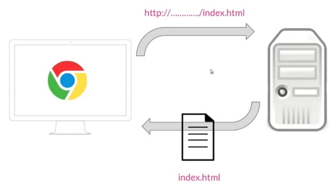

Qué significa HTML5
Cuando hablamos de HTML5 lo primero que tenemos que saber es que es la última versión de la tecnología HTML, cuyas siglas corresponden a “HyperText Markup Language”, que tiene el siguiente significado:
» HyperText, cuyo significado es hipertexto, que no es más que un texto que enlaza con otros contenidos, que pueden ser otro texto u otro archivo. Esto es la base del funcionamiento de la web tal y como la conocemos, que no es más que páginas y recursos interconectados.
» Markup, que significa marca o etiqueta, ya que todas las páginas web están construidas en base a etiquetas, desde las primeras versiones hasta las últimas etiquetas de HTML5. Un ejemplo de una etiqueta HTML es la que identifica a un párrafo, que se compone de la etiqueta, el contenido de la etiqueta y el cierre del párrafo: <p>HOLA</p>.
» Languaje, cuyo significado es lenguaje, porque HTML es un lenguaje, es decir, tiene sus normas, tiene su estructura y una serie de convenciones que nos sirven para definir tanto la estructura como el contenido de una web.
Algo importante a tener en cuenta y con lo que no hay que confundirse, es que porque HTML sea un lenguaje no quiere decir que sea un lenguaje programación. HTML no lo es, ya que no tiene estructuras de lenguaje de programación, como los bucles, las condiciones, las funciones, etcétera.
Funcionamiento HTML5
Vamos a ver cómo es proceso cuando se solicita una página HTML a través del navegador. El proceso es el siguiente:

Desde el navegador se realiza una petición a un servidor, lo que se hace a través de una dirección del tipo http://..../index.html. Después el servidor recupera de su disco duro esa página, la devuelve al navegador y la página se muestra.
Estructura HTML5
A continuación se visualizara la estructura de HTML5 asignandole algunos estilos y añadiendo las etiquetas.

Vinkula, B. (s. f.). Estructura del código HTML5 – Anatomía de una página web. [Archivo de imagen].
Recuperado de Vinkula. https://vinkula.com/estructura-del-codigo-html5-anatomia-de-una-pagina-web/#HTML
JimÉNez, J. D. P. (2020, 25 junio). Qué es HTML5. OpenWebinars.net. [contenido página].
Recuperado de https://openwebinars.net/blog/que-es-html5/